国学经典
古人云：“祖宗虽远，祭祀不可不诚；子孙虽愚，经书不可不读。”儿童天性未污染前，善言易入；先入为主，及其长而不易变；故人之善心、信心，须在儿童时培养；凡为父母者，在其子女少时，即当教以读诵经典，以培养其根本智慧及定力；长大之后，这些经书所言的修身、齐家、治国、平天下智慧，早已自然而然潜移默化于小孩的身心当中。我们坚信：透过经典文化的教育，培植孩子们孝亲尊师的敦厚家风，于他生命长河的涵泳必是裨益良多。健全人格、培养情操、塑造品德、铸造精神、提升智力。
.jpg)
.jpg) 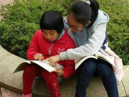
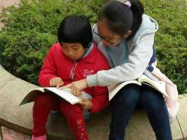 读书交流
“读书已成了我的一种生活方式”习近平总书记如是说。 2014年10月16日，在习总书记的倡议下召开了文艺工作座谈会，在大约2个小时的讲话中，习总书记不但对当前文艺现状发表看法和评论，更深情回忆了自己少年和知青时期的文艺生活，谈到了文艺对自己成长的影响。“文以载道、以文化人……历史上，中华民族之所以有地位有影响，不是穷兵黩武，不是对外扩张，而是中华文化具有强大感召力。……好的文艺作品能启迪思想，温润心灵。” 同年2月和3月，习大大在俄罗斯索契和法国巴黎两次向媒体公开了自己的阅读“书单”，涉及到的作家包括克雷洛夫、普希金、果戈里、莱蒙托夫、屠格涅夫、陀思妥耶夫斯基、涅克拉索夫、车尔尼雪夫斯基、托尔斯泰、契诃夫、肖洛霍夫、孟德斯鸠、伏尔泰、卢梭、狄德罗、圣西门、傅立叶、萨特、蒙田、拉封丹、莫里哀、司汤达、巴尔扎克、雨果、大仲马、乔治·桑、福楼拜、小仲马、莫泊桑、罗曼·罗兰、拜伦、雪莱、萧伯纳、狄更斯、歌德、席勒、海涅、惠特曼、马克·吐温、杰克·伦敦、海明威等。 做个读纸质书的低头一族。
.jpg)
.jpg)
识物析名
大自然是最好的老师。 广东梅州近年重生态旅游空前的迅速发展，成为珠三角的天然氧吧，修心养性的后花园。学校地处雁南飞、桥溪古韵5A级风景区内，原始林区植被繁茂，古木成林，植物物种丰富， 置身在大自然中，认识植物（农作物），了解植物与人类的生活的影响并亲自栽种。 让孩子们在生活中，时时留意身边的花花草草，与人分享，体会大自然带给我们的快乐、智慧、感悟……
.jpg) 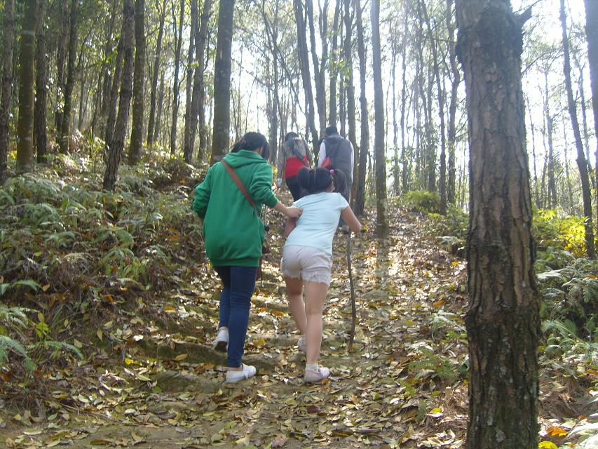
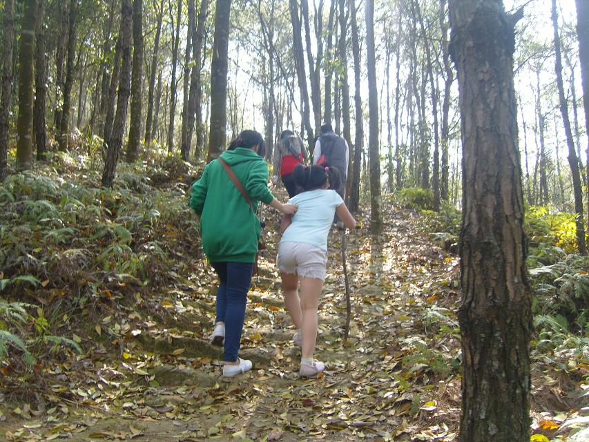 .jpg)
汉字意义
随着电脑的普及，网络的覆盖，人们用笔书写的习惯正在慢慢地消失；小学的汉字教学，基本上停留在读音和字形上，对字义不敢深入挖掘。久而久之，将不会写字，对汉字丰富的内涵也将无从谈起，离开电脑，写出文章了。这不是危言耸听，应引起家长们的关注。不要让孩子们因为网络，懒得记懒得学——到网上查查就行了。 汉字的内涵，丰富多彩。我们不得不对创造出这样的文字的我们的祖先顶礼膜拜，为之折服。潜心研究，你会走近一个浩瀚无边的人文世界。汉字不仅是方块字，它还有情有义，有血有肉。
 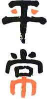
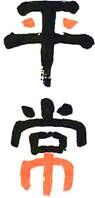
（倒）‘士’兜里两粒丹，和‘尚’座下垫一‘巾’。参禅论道心千万，识得平常有几人？两袖清风游天下，参禅打坐悟大道。像他们一样，平常心就来了。
客家文化
梅州是国家历史文化名城，是我国汉族客家人最集中的聚居地，素有“世界客都”之称，客家民系深厚的文化积淀，独特的民俗风情，神奇的迁徙历史，誉称为华传统文化的“活化石”、“生活中的古典”在中国民俗史上占用极高的历史地位和很高的研究价值。 梅州本地国家级导游老师授课，结合实地（美丽乡村——桥溪古村落），讲解包括客家语、戏剧、音乐、舞蹈、工艺、民俗、建筑、人文、饮食等方面的内容。
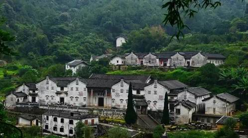.jpg) 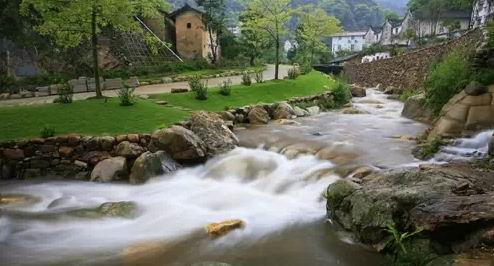
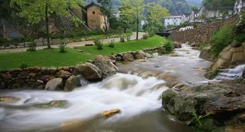 特色游戏、活动
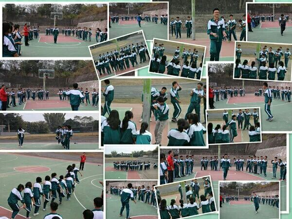 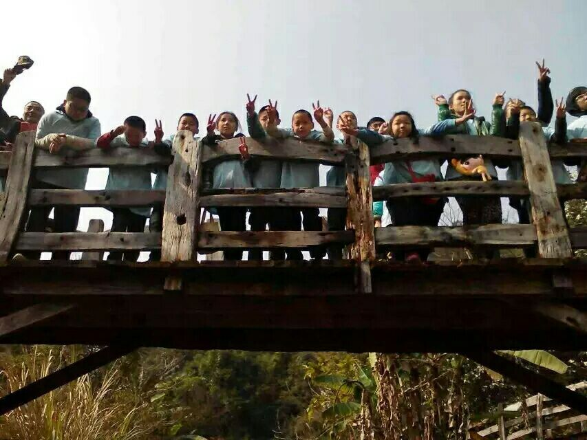 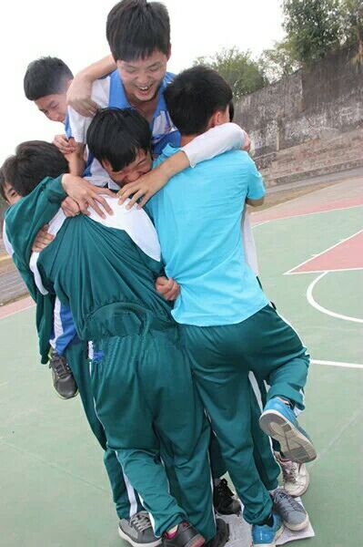户外拓展活动（游戏训练）
中国绳结与生存技巧训练
 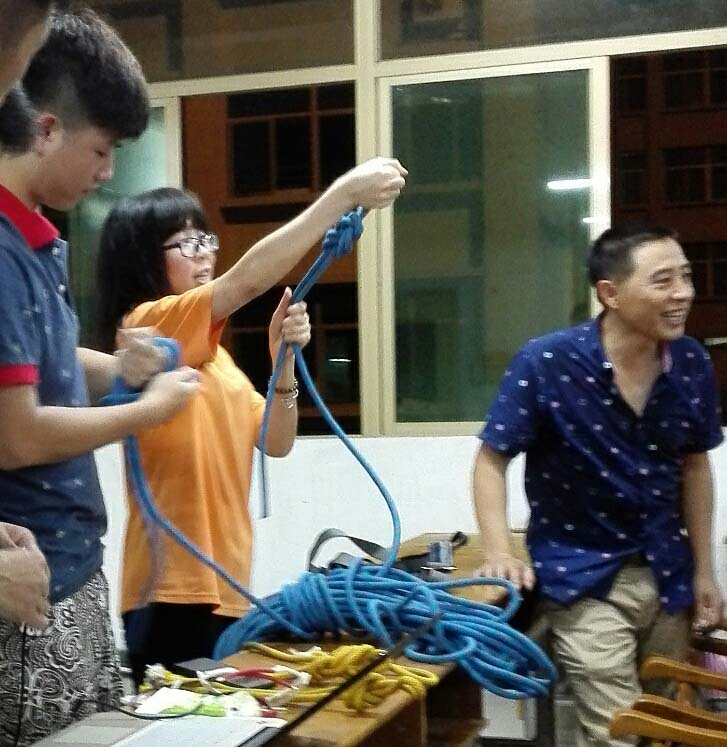
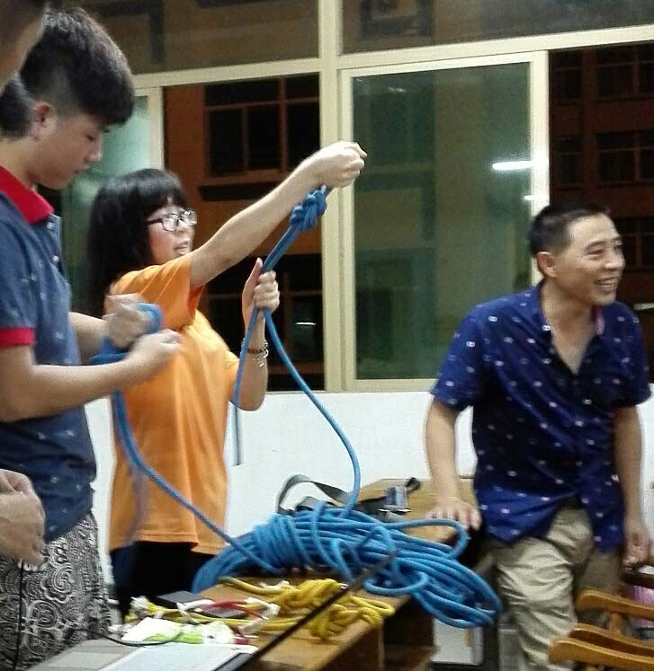 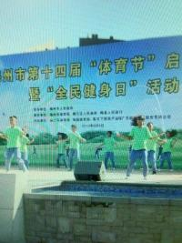 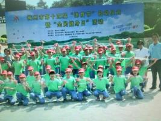武术、大极拳、花样跳绳等
菜园劳动体验
.jpg) 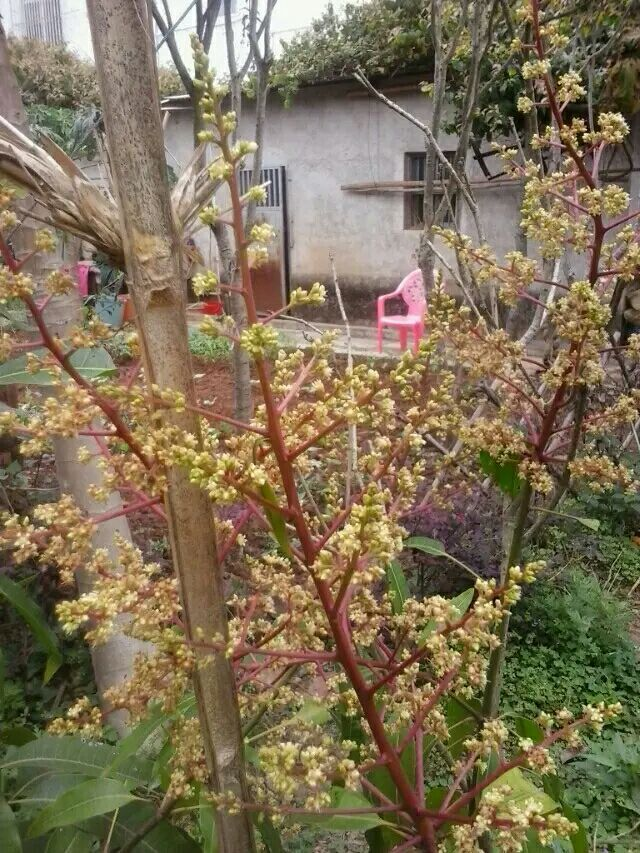
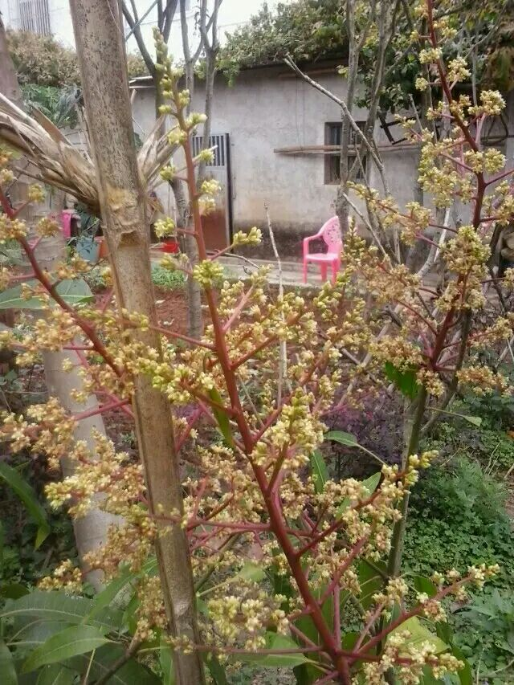 .jpg)
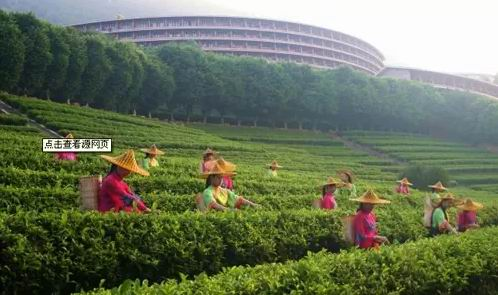 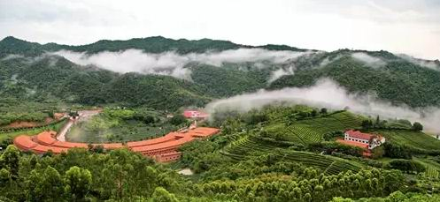雁南飞体验学习茶艺
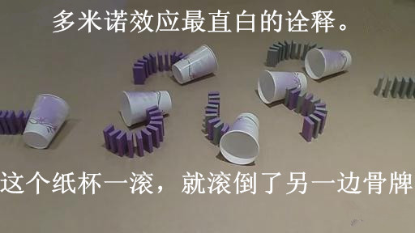多米诺骨牌团体制作
独一无二暗示教育：你是唯一的
每个人身上都蕴含着中华文化的精华，等待你的开发挖掘，从人的名字入手，解读汉字，真正喜欢上你自己，对学生进行积极的终生暗示教育。
示例1：
嵌名诗赠陈宇沐、蔡惠夫妇，祝小公主陈韵琪快乐读书健康成长。
韵风律雅风尘意，
琪花瑶草玉树花，
器宇轩昂庇高堂，
恩沐润泽惠后裔。
（韵律：女孩像诗，要韵律；跳舞也要，风采也要。风雅：可以解释成‘外貌或举止端庄的或高雅’， 另《诗经》有《国风》、《大雅》、《小雅》等部分，后世用风雅泛指诗文方面的事。琪花：仙境中的玉树之花，其美如玉。瑶草：我们汉族的神话传说中有这样类似灵芝类的仙草，能医治百病，服之长生，是人间梦寐以求的神物。）器宇轩昂的房子庇护着父母(高堂既是房屋又指父母，一词双关)，宇：四方上下曰“宇”，以屋喻天地也，屋四垂就为“宇”了，屋檐之下，喻在庇护家人，做父亲的名字里有“宇”，非常捧，要有更多的担当。再加上父母亲的恩‘惠’‘沐’浴润泽小公主。
赠熊衡基、熊恒业俩兄弟
小权长衡平为重，大厦实基稳为要；
持事贵恒德之固，勤情精业艺之长；
北岳恒山势如行，南岳衡山动若飞；
五尊有二创基业，朱雀玄武耀宗祠。
示例3：
宝塔茶诗赠叶小忠老师及夫人苏丽女士，祝福公子公主雨霖酥霖
茶
叶嫩，茶绿。
洋伞岌，苏家女。
丽景云雾，酥雨甘霖。
东坡寻茗道，霞客觅仙踪。
心怡峰回百转，红焙浅瓯小盅。
古有陆羽圣经传，今有清凉茶飘香。
（注：叶老师家住风景秀美的梅州清凉山洋伞岌百年茶场。）
人名倒塔诗（钟鲜惠）
古寺幽幽送晨钟（风）
蓓蕾点点露芷鲜（华）
闻鸡催日人通惠（绝）
静听天籁远近佳（妙）
钟鸣晨寺声更幽
鲜蓓露兰香愈远
惠人通悟心生静
佳丽天成意真诚
钟鸣晨寺声幽
鲜蓓露兰香远
惠人通悟心静
佳丽天成意真
钟鸣晨寺声
鲜蓓露兰香
惠人通悟心
佳丽天成意
钟鸣晨寺
鲜蓓露兰
惠人通悟
佳丽天成
钟鸣寺
鲜蓓兰
惠人悟
佳丽成
钟鸣
鲜蓓
惠人
佳丽
钟
鲜
惠
佳
星光夜谈分享心得
长教学校，周边葱郁，夏夜清凉，星光点点，支起帐蓬，分享当下。
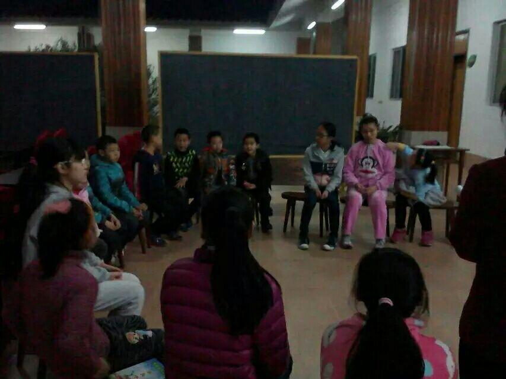 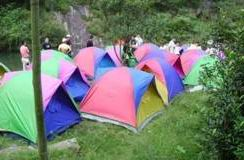 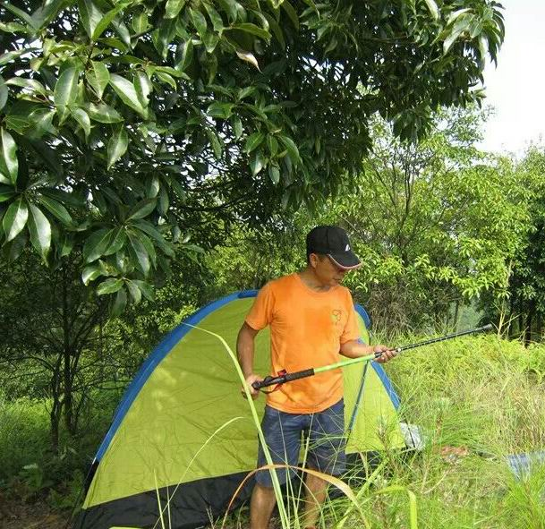 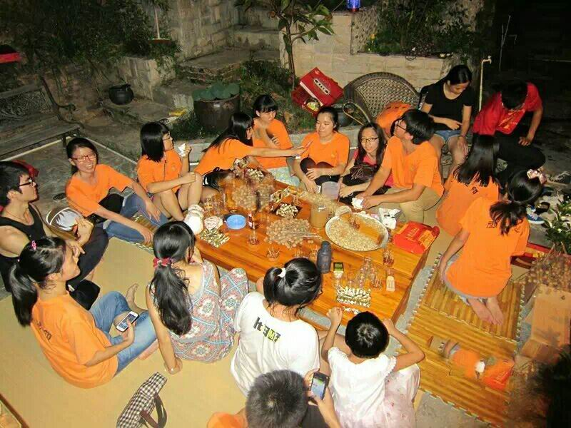